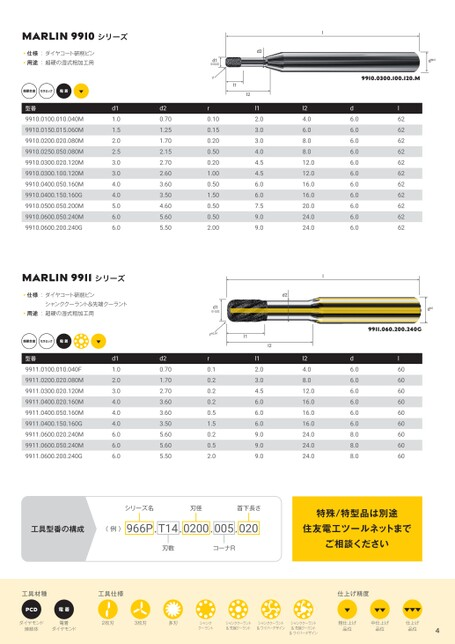

p.4製品情報（続き）

MARLIN9910シリーズ
仕様:ダイヤコート研削ピン d2 d2
用途:超硬の湿式粗加工用 0/±0,02 d1 0/±0,02 d1 d6h5 d6h5
9910.0300.100.120.M
超硬合金 セラミック 電着
d1 型番 d2 d1 l1 d2 l2 d l1 l2 d
1.0 9910.0100.010.040M 0.70 0.10 1.0 2.0 0.70 4.0 0.10 6.0 2.0 62 4.0 6.0 62
1.5 9910.0150.015.060M 1.25 0.15 1.5 3.0 1.25 6.0 0.15 6.0 3.0 62 6.0 6.0 62
2.0 9910.0200.020.080M 1.70 0.20 2.0 3.0 1.70 8.0 0.20 6.0 3.0 62 8.0 6.0 62
2.5 9910.0250.050.080M 2.15 0.50 2.5 4.0 2.15 8.0 0.50 6.0 4.0 62 8.0 6.0 62
3.0 9910.0300.020.120M 2.70 0.20 3.0 4.5 2.70 12.0 0.20 6.0 4.5 62 12.0 6.0 62
3.0 9910.0300.100.120M 2.60 1.00 3.0 4.5 2.60 12.0 1.00 6.0 4.5 62 12.0 6.0 62
4.0 9910.0400.050.160M 3.60 0.50 4.0 6.0 3.60 16.0 0.50 6.0 6.0 62 16.0 6.0 62
4.0 9910.0400.150.160G 3.50 1.50 4.0 6.0 3.50 16.0 1.50 6.0 6.0 62 16.0 6.0 62
5.0 9910.0500.050.200M 4.60 0.50 5.0 7.5 4.60 20.0 0.50 6.0 7.5 62 20.0 6.0 62
6.0 9910.0600.050.240M 5.60 0.50 6.0 9.0 5.60 24.0 0.50 6.0 9.0 62 24.0 6.0 62
6.0 9910.0600.200.240G 5.50 2.00 6.0 9.0 5.50 24.0 2.00 6.0 9.0 62 24.0 6.0 62
MARLIN9911シリーズ
仕様:ダイヤコート研削ピン d2 d2
シャンククーラント&先端クーラント シャンククーラント&先端クーラント d1 d1 dh5 dh5
用途:超硬の湿式粗加工用 0/-0,02 0/-0,02
9911.060.200.240G
r±0,01
超硬合金 セラミック 電着
d1 型番 d2 d1 l1 d2 l2 d l1 l2 d
1.0 9911.0100.010.040F 0.70 0.1 1.0 2.0 0.70 4.0 0.1 6.0 2.0 60 4.0 6.0 60
2.0 9911.0200.020.080M 1.70 0.2 2.0 3.0 1.70 8.0 0.2 6.0 3.0 60 8.0 6.0 60
3.0 9911.0300.020.120M 2.70 0.2 3.0 4.5 2.70 12.0 0.2 6.0 4.5 60 12.0 6.0 60
4.0 9911.0400.020.160M 3.60 0.2 4.0 6.0 3.60 16.0 0.2 6.0 6.0 60 16.0 6.0 60
4.0 9911.0400.050.160M 3.60 0.5 4.0 6.0 3.60 16.0 0.5 6.0 6.0 60 16.0 6.0 60
4.0 9911.0400.150.160G 3.50 1.5 4.0 6.0 3.50 16.0 1.5 6.0 6.0 60 16.0 6.0 60
6.0 9911.0600.020.240M 5.60 0.2 6.0 9.0 5.60 24.0 0.2 8.0 9.0 60 24.0 8.0 60
6.0 9911.0600.050.240M 5.60 0.5 6.0 9.0 5.60 24.0 0.5 8.0 9.0 60 24.0 8.0 60
6.0 9911.0600.200.240G 5.50 2.0 6.0 9.0 5.50 24.0 2.0 8.0 9.0 60 24.0 8.0 60
シリーズ名 刃径 シリーズ名 首下長さ 刃径 特殊/特型品は別途 首下長さ 特殊/特型品は別途
〈例〉 966P.T14.0200.005.020 工具型番の構成 〈例〉 966P.T14.0200.005.020 住友電工ツールネットまで 住友電工ツールネットまで
ご相談ください
刃数 コーナR
工具仕様 工具材種 工具仕様 仕上げ精度 仕上げ精度
PCD 電着
2枚刃 ダイヤモンド 焼結体 3枚刃 ダイヤモンド 電着 多刃 クーラント シャンク 2枚刃 シャンククーラント &先端クーラント 3枚刃 &ワイパーデザイン シャンククーラント多刃 シャンククーラント &先端クーラント クーラント シャンク シャンククーラント &先端クーラント 粗仕上げ 品位 &ワイパーデザイン シャンククーラント 中仕上げ 品位 シャンククーラント &先端クーラント 仕上げ 品位 粗仕上げ 品位 中仕上げ 品位 仕上げ 品位
&ワイパーデザイン &ワイパーデザイン 4 4